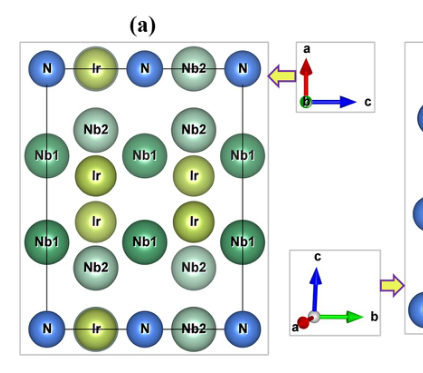
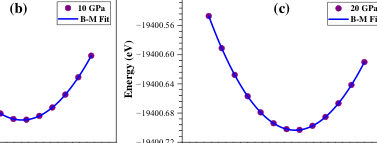
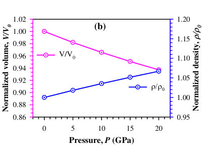
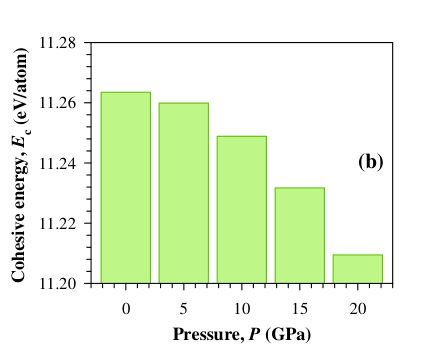
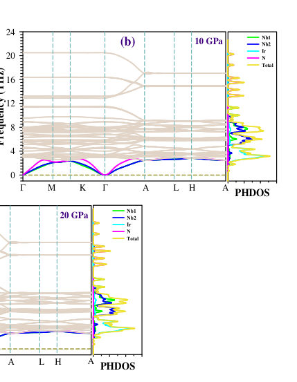

Authors: M. Abdul Hadi Shah, J. H. Abir, S. H. Naqib
Type: theory · Category: other · PDF: https://arxiv.org/pdf/2609.18113v1
Analysis basis: full PDF text, analyzed in chunks





Summary. This theoretical study uses DFT to map out the physical properties of the electride superconductor Nb5Ir3N across pressures up to 20 GPa. It confirms the material's stability and details how its mechanical, electronic, and optical characteristics change under compression. The work provides a comprehensive computational picture of this novel superconducting material.
Why it may be interesting. While focused on superconductivity, the comprehensive DFT analysis of pressure-dependent electronic and optical properties provides rich data on material response under extreme conditions, relevant for understanding quantum phenomena in condensed matter.
Main problem. The study investigates the multifunctional physical properties of the nitrogen-based electride superconductor Nb5Ir3N under varying external pressures.
Main result. The research confirms the structural, thermodynamic, mechanical, and dynamical stability of Nb5Ir3N across the entire pressure range, while detailing pressure-dependent electronic and optical responses.
Method. The investigation relies entirely on Density Functional Theory (DFT) based first-principles calculations, simulating properties from 0 to 20 GPa.
Model / system. The physical system is the ternary nitride electride superconductor, Nb5Ir3N, which is modeled using DFT calculations to explore its behavior under high pressure.
Key observables. Structural parameters, elastic constants, phonon spectra, electronic band structure, density of states, optical response ($\epsilon(\omega)$), and superconducting features.
Important parameters / regimes. Pressure range (0 to 20 GPa), Spin-Orbit Coupling (SOC) inclusion, and the hexagonal crystal structure.
Assumptions / limitations. The analysis relies on DFT approximations, and the discussion of superconducting features is noted as being qualitative.
Figures summary. Not specified in the notes, but the analysis covers structural, mechanical, electronic, and optical spectra as a function of pressure.
Paper structure. The paper systematically analyzes the material's stability (structural/thermodynamic), mechanical response (ductility/anisotropy), electronic structure (band/DOS), and optical properties (reflectivity/absorption) as pressure is varied.
Discovery and study of superconducting electrides have opened new avenues in condensed matter physics, driven by their intriguing multifunctional features spanning ambient and high-pressure regimes. This work investigates the ternary nitride superconductor Nb5Ir3N under pressure ranging from 0 to 20 GPa via density functional theory based simulations. Estimated structural parameters agree well with the available data, confirming their reliability and supporting the validity of this analysis. Negative formation enthalpy, together with evaluated elastic constants and phonon spectra, confirm the structural, thermodynamic, mechanical, and dynamical stability of Nb5Ir3N over the entire pressure range. Pressure dependent elastic constants and polycrystalline elastic moduli are investigated. The compound is categorized as ductile in light of estimated mechanical indices. Elastic anisotropy factors indicate that Nb5Ir3N remains anisotropic, with the degree of anisotropy gradually decreasing as pressure increases. Electronic band structure and density of states are calculated with and without spin orbit coupling to investigate its influence on the electronic structure. Calculated optical response reveals substantial intraband contributions in the low energy region, intense ultraviolet absorption, and strong reflectivity. The spectra exhibit optical anisotropy and a broadening at higher pressures. Pressure induced superconducting features are also discussed qualitatively.